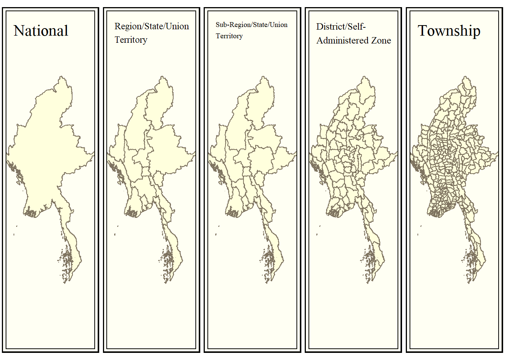

pacman::p_load(tidyverse, sf, spatstat, ggplot2, tmap)01 Take Home Exercise 1
Geospatial Analytics for Social Good: Application of Spatial and Spatio-temporal Point Patterns Analysis to discover the geographical distribution of Armed Conflict in Myanmar
Data sets:
- Data Set Columns Information
- Data Set Myanmar Overview
- Categories by Event Type: Battles, Explosion/Remote violence, Strategic developments, and Violence against civilians.
- In terms of study period, students should focus on quarterly armed conflict events from January 2021 until June 2024.
Importing Data sets:
Bullet points:
- point 1 on lesson 1 (dataset: administrative boundary data -> sf tibble dataframe)
- point 2 and 3 last week lesson 3 (dataset: ACLED point data -> derive KDE & 2nd-Order Point Pattern Analysis)
- Caution! dataset is very large! For point 2, it may take 8 mins. For point 3, it may take half a day.
- Make sure to estimate the time, effort you require -> plan ahead
Case Study:
History of Myanmar Armed Conflict:
Current Situation:
Study Area:
Focus and Objective:
Analysis Methods Used:
Our main purpose here this time is to study the quarterly spatio-temporal distribution of armed conflict events in Myanmar. Therefore, the focus is mainly on the types of events, date of events, and the location of events. We will not be focusing on other matters in this exercise.
1 Importing the Necessary
1.1 Importing Libraries / Packages
1.2 Importing Raw Data
1.2.1 ACLED Data Set
Before we start manipulating the data, it is important that we understand what each data column and data type mean and how valuable it is for our analysis.
To begin, let us refer to the ACLED data set codebook
Now, let us first import the data.
##| eval: false
# filter_columns <- c("event_date","year","disorder_type","sub_event_type","admin1","admin2","admin3")
violence_against_civ <- read_csv("data/raw/aspatial/ACLED/violence-against-civilians.csv") %>%
st_as_sf(coords =c(
"longitude", "latitude"),
crs=4326) %>%
st_transform(crs = 32647) %>%
mutate(event_date = dmy(event_date))
strategic_dev <- read_csv("data/raw/aspatial/ACLED/strategic-developments.csv") %>%
st_as_sf(coords =c(
"longitude", "latitude"),
crs=4326) %>%
st_transform(crs = 32647) %>%
mutate(event_date = dmy(event_date))
battles <- read_csv("data/raw/aspatial/ACLED/battles.csv") %>%
st_as_sf(coords =c(
"longitude", "latitude"),
crs=4326) %>%
st_transform(crs = 32647) %>%
mutate(event_date = dmy(event_date))
explosion_or_remote_vio <- read_csv("data/raw/aspatial/ACLED/explosion-or-remoteviolence.csv") %>%
st_as_sf(coords =c(
"longitude", "latitude"),
crs=4326) %>%
st_transform(crs = 32647) %>%
mutate(event_date = dmy(event_date))1.2.2 Administrative Boundary Dataset
In this exercise, we will only analyse geographical distribution of point data up to the 3rd degree administrative division, i.e. up to Township level.
The following data are the administrative boundaries of Myanmar, obtained from MIMU Vector Boundaries, a common data and information repository by a NGO (related to UN).
While many data formats exist, we will choose .csv files when downloading as they are easier to read and work with. A suitable alternative is the .shp file format available on the website.
Datasets:
mmr_polbnda_adm0_250k_mimu_1.csvNational boundary of Myanmarmmr_polbnda_adm1_250k_mimu_1.csvRegion/State/Union Territory level boundary of Myanmarmmr_polbnda2_adm1_250k_mimu_1.csvSub-Region/State/Union Territory level boundary of Myanmar; Sub-region divides a region into smaller divisions, such as “Bago (East)” and “Bago (West)” instead of “Bago”mmr_polbnda_adm2_250k_mimu.csvDistrict/Self-Administered Zone level boundary of Myanmarmmr_polbnda_adm3_250k_mimu_1.csvTownship level boundary of Myanmar
# kml file not easy to read due to nested columns for attributes data
admin_0 <- read_csv("data/raw/geospatial/mimu_admin_boundary/mmr_polbnda_adm0_250k_mimu_1.csv") %>%
st_as_sf(wkt = "the_geom",
crs=4326) %>%
st_transform(crs = 32647)
admin_1 <- read_csv("data/raw/geospatial/mimu_admin_boundary/mmr_polbnda_adm1_250k_mimu_1.csv") %>%
st_as_sf(wkt = "the_geom",
crs=4326) %>%
st_transform(crs = 32647)
admin_1_sub <- read_csv("data/raw/geospatial/mimu_admin_boundary/mmr_polbnda2_adm1_250k_mimu_1.csv") %>%
st_as_sf(wkt = "the_geom",
crs=4326) %>%
st_transform(crs = 32647)
admin_2 <- read_csv("data/raw/geospatial/mimu_admin_boundary/mmr_polbnda_adm2_250k_mimu.csv") %>%
st_as_sf(wkt = "the_geom",
crs=4326) %>%
st_transform(crs = 32647)
admin_3 <- read_csv("data/raw/geospatial/mimu_admin_boundary/mmr_polbnda_adm3_250k_mimu_1.csv") %>%
st_as_sf(wkt = "the_geom",
crs=4326) %>%
st_transform(crs = 32647)1.2.3 Quick Plot To Visualise Data Sets
Before we continue, let’s get a visual sense of the data by plotting it on a map to ensure we are working with the right dataset. In this step, we will also try to see if there are any erranous data that we have to clean later.
Check the Administrative Boundaries Data Set
From the left to right, we are able to see the increase in degree of administrative boundary division; respectively, they represent
- “National”,
- “Region/State/Union Territory”,
- “Sub-Region/State/Union Territory”,
- “District/Self-Administered Zone”, and
- “Township”
tmap_mode("plot")
tmap_style("classic")
tmap_arrange(
qtm(admin_0, title="National"),
qtm(admin_1, title="Region/State/Union\nTerritory"),
qtm(admin_1_sub, title="Sub-Region/State/Union\nTerritory"),
qtm(admin_2, title="District/Self-\nAdministered Zone"),
qtm(admin_3, title="Township"),
ncol = 5
)
Conclusion: Administrative Boundaries Looks Okay
Looking at both the attribute table and the plot, the administrative boundaries data seem quite alright, so we might not need to do any cleaning. Anyway, the precision of the polygons it not as critical as the precision of the ACLED data (which will be used for our spatial point patterns analysis).
Check ACLED Data Set
Since the ACLED data is our main focus, let us now plot the data points onto the map of Myanmar.
In the code chunk below, we plot out the various types of data points from ACLED, namely (from left to right):
- “Violence against Civilians”,
- “Strategic Developments”,
- “Explosion/Remote Violence”, and
- “Battles”
tmap_mode("plot")
tmap_style("cobalt")
tmap_arrange(
qtm(admin_0) + qtm(violence_against_civ, title="Violence against\nCivilians"),
qtm(admin_0) + qtm(strategic_dev, title="Strategic\nDevelopments"),
qtm(admin_0) + qtm(explosion_or_remote_vio, title="Explosion/\nRemote Violence"),
qtm(admin_0) + qtm(battles, title="Battles"),
ncol = 4
)
Observation: ACLED Data Set needs further study, may need to clean
Nothing looks very off at a glance, but we should look into the attribute columns to see if the data set is truly clean. Let us refer to the codebook again, and see if we can spot any potentially critical problems.
Referring to the attribute columns and the codebook, we can see potentially critical concerns:
- geo_precision – The precision of the geocoded coordinates ranges from code 1 to code 3; where lower level implies higher precision.
- In particular, “[if] a larger region is mentioned, the closest natural location noted in reporting (like “border area,” “forest,” or “sea,” among others) – or a provincial capital is used if no other information at all is available – is chosen to represent the region, and ‘Geo-precision’ code 3 is recorded.” (page 36)
- time_precision – The precision of the recorded datetime ranges from code 1 to code 3; where lower level implies higher precision.
- In particular, “if the source material only indicates that an event took place sometime during a month (i.e. in the past two or three weeks, or in January), without reference to the particular date, the month mid-point is chosen. If the beginning or end of the month is noted, the first and last date is used, respectively. In both of these cases, a ‘Time precision’ code of 3 is recorded.” (page 36-37)
In both cases, ACLED do not include events with less spatial or temporal precision.
Identifying code 3 precisions
Given that precision of our point data is crucial to our spatial-temporal point patterns analysis, we should see how much of our data is imprecise, and whether we should keep the imprecise data points.
# Violence against Civilians
violence_against_civ %>% count(geo_precision)
violence_against_civ %>% count(time_precision)
# Strategic Developments
strategic_dev %>% count(geo_precision)
strategic_dev %>% count(time_precision)
# Explosion or Remote Violence
explosion_or_remote_vio %>% count(geo_precision)
explosion_or_remote_vio %>% count(time_precision)
# Battles
battles %>% count(geo_precision)
battles %>% count(time_precision)Conclusion: Drop time and spatial precision code 3 data values from ACLED Data set
From this analysis, we can see that the count of precision code 3 in both time and spatial precision is actually very low, it might be worth dropping the values with low time and spatial precision.
Let us start cleaning the data
1.3 Data Cleaning
Let us filter out the data we want (time_precision and geo_precision codes < 3), and see how many rows we have removed.
# Extract all rows where either geo_precision or time_precision is not = 3
violence_against_civ_filtered <- violence_against_civ %>%
filter(!(geo_precision == 3 | time_precision == 3))
strategic_dev_filtered <- strategic_dev %>%
filter(!(geo_precision == 3 | time_precision == 3))
explosion_or_remote_vio_filtereed <- explosion_or_remote_vio %>%
filter(!(geo_precision == 3 | time_precision == 3))
battles_filtered <- battles %>%
filter(!(geo_precision == 3 | time_precision == 3))
cat("Number of rows dropped:", nrow(violence_against_civ) - nrow(violence_against_civ_filtered) , "\n")Number of rows dropped: 34 cat("Number of rows dropped:", nrow(strategic_dev) - nrow(strategic_dev_filtered) , "\n")Number of rows dropped: 227 cat("Number of rows dropped:", nrow(explosion_or_remote_vio) - nrow(explosion_or_remote_vio_filtereed) , "\n")Number of rows dropped: 22 cat("Number of rows dropped:", nrow(battles) - nrow(battles_filtered) , "\n")Number of rows dropped: 42 Overall, the result seems satisfactory. Let us continue with our data cleaning. by keeping only columns that are important for our analysis.
We will only keep the following columns as other columns are not relevant to our study:
- event_date,
- year,
- disorder_type,
- sub_event_type,
- admin1,
- admin2,
- admin3
- (also including the geometry data)
filter_columns <- c("event_date","year","disorder_type","sub_event_type","admin1","admin2","admin3")
violence_against_civ_filtered <- violence_against_civ_filtered %>%
select(all_of(filter_columns))
strategic_dev_filtered <- strategic_dev_filtered %>%
select(all_of(filter_columns))
explosion_or_remote_vio_filtereed <- explosion_or_remote_vio_filtereed %>%
select(all_of(filter_columns))
battles_filtered <- battles_filtered %>%
select(all_of(filter_columns))1.4 Data Extraction
1.4.1 Extract Quarterly Data from ACLED Dataset
Now, since we want to analyse the quarterly events, let us add a new column within the tibble DataFrame called quarter to represent the quarter of each date in numerical format, e.g. (1, 2, 3, or 4). After that, let us create another column called year_quarter to represent the quarter of every year in string format, e.g. (“2021-Q1”, “2023-Q4”).
The package we will be using here is called lubridate, a package within the tidyverse library.
violence_against_civ_filtered <- violence_against_civ_filtered %>%
mutate(quarter = quarter(event_date)) %>%
mutate(year_quarter = paste0(year, "-Q", quarter))
strategic_dev_filtered <- strategic_dev_filtered %>%
mutate(quarter = quarter(event_date)) %>%
mutate(year_quarter = paste0(year, "-Q", quarter))
explosion_or_remote_vio_filtereed <- explosion_or_remote_vio_filtereed %>%
mutate(quarter = quarter(event_date)) %>%
mutate(year_quarter = paste0(year, "-Q", quarter))
battles_filtered <- battles_filtered %>%
mutate(quarter = quarter(event_date)) %>%
mutate(year_quarter = paste0(year, "-Q", quarter))1.5 Export Data Sets (RDS file format)
Before we continue, let’s export our cleaned data sets so that our changes are saved. We will export the data sets in the RDS format.
RDS stands for R Data Serialization. It’s a binary serialization format in R used to save R objects to a file. This format preserves the class, attributes, and structure of the R object, making it useful for saving and loading data while maintaining its integrity.
Tip
By exporting the data, and importing it again, it also serves as a checkpoint for our analysis. We will be able to stop loading old variables in our environment, and only load in the new variables. It also allows readers who are trying to reproduce the analysis verify their own results with our analysis results.
# Save the sf object to an RDS file
saveRDS(violence_against_civ, "data/rds/violence_against_civilians.rds")
saveRDS(strategic_dev, "data/rds/strategic_developments.rds")
saveRDS(explosion_or_remote_vio, "data/rds/explosion_or_remoteviolence.rds")
saveRDS(battles, "data/rds/battles.rds")Now, let’s continue to the next section.
2 Kernel-Density Estimation
2.1 Import Data Sets (RDS file format)
violence_against_civ <- readRDS("data/rds/violence_against_civilians.rds")
strategic_dev <- readRDS("data/rds/strategic_developments.rds")
explosion_or_remote_vio <- readRDS("data/rds/explosion_or_remoteviolence.rds")
battles <- readRDS("data/rds/battles.rds")TO BE COMPLETED